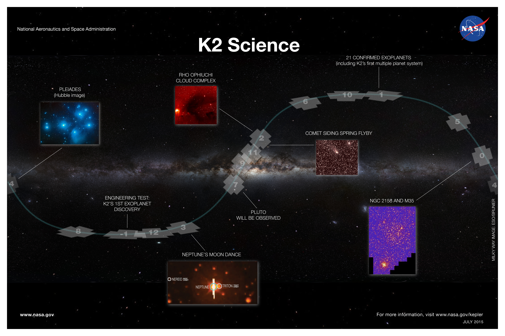

Image Credit: NASA Ames/W. Stenzel
Science from K2
K2 is an active, community-driven mission with a variety of scientific results that relate to the discovery of transiting planets around bright, nearby stars, star clusters, extragalactic astrophysics, supernovae studies, solar system objects, and more. For example, K2 has already discovered over 20 transiting planets with hundreds more candidates awaiting confirmation. K2 has also provided unparalleled photometry of Neptune and asteroids in the solar system. Additional information about the mission, including publications using K2 data, the previous and upcoming Campaigns, and approved targets and programs can be found on the following pages.
- Overview of the K2 mission
- Publications using K2 data
- K2 Campaign fields
- K2 technical information
- K2 approved targets and programs
- K2 Campaign 9 microlensing experiment
The image below highlights some of the science that has been or will be conducted with data from K2.
 Image Credit: NASA Ames/W. Stenzel
Science from Kepler
With over four years of continuous monitoring of over 150,000 stars in the Cygnus-Lyra region, Kepler has produced and still continues to produce myriad scientific results. To date, Kepler has discovered over 4,600 planet candidates, many of which have already been confirmed or validated. These planets are highlighted in the image below. Kepler data has also revealed insights into eclipsing binary systems, asteroseismology, gyrochronology, supernovae, and more. A comprehensive list of Kepler publications can be found here.
 Image Credit: NASA Ames/W. Stenzel
Image Credit: NASA Ames/W. Stenzel
Working groups
The Kepler Project fosters self-governing working groups of community scientists to advance and recommend upon aspects of primary mission science. Working groups also collaborate on science projects that are complementary to the primary science goals. Several of these groups are still active. All the working groups are described briefly below.
- Threshold Crossing Event Review Team (TCERT)
POC: Michael Haas, NASA Ames Research Center
TCERT is primarily responsible for reviewing and dispositioning the Threshold Crossing Events (TCEs) identified by the Kepler Pipeline. A TCE is a statistically significant transit signal detected by Kepler's analysis pipeline. During the initial review process, TCEs that indicate a planetary-size companion are declared Kepler Objects of Interest (KOIs) and subjected to additional tests and more rigorous scrutiny. Once this in-depth analysis and evaluation is complete, each KOI will be dispositioned as a planetary candidate or false positive. These results are delivered on a regular basis to NExScI for public release through their Exoplanet Archive.
-
Follow-up Observing Program (FOP)
POC: David Ciardi, NASA Exoplanet Science Institute
The scientific goals of the Kepler Extended Mission Follow-up Observation Program (XMFOP) are to confirm and validate the planetary nature of the Kepler Objects of Interest (KOIs) via the determination of stellar parameters, radial velocity curves, and stellar blends. Besides yielding exoplanet confirmations and characterizations, the work results in more accurate properties of the KOI host stars and, consequently, the planet candidates they harbor. The work also yields a better understanding of the overall reliability of the KOI catalog. The XMFOP performs the following duties in support of Kepler's scientific goals:- Spectroscopic observations for the purpose of determining stellar properties.
- Spectroscopic observations for the purpose of identifying stellar companions and/or placing limits on the presence of such companions.
- High-precision radial velocity for a limited sample of relatively small exoplanet candidates to determine their masses and other orbital properties.
- High spatial resolution imaging for the purpose of detecting line-of-sight and/or physically associated stars in the photometric aperture and/or placing constraints on the presence of such blends.
- Other supporting observations as opportunities arise (e.g. Spitzer, HST, etc).
-
False Positive Working Group (FP)
POC: Steve Bryson, NASA Ames Research Center
There are instrumental and astrophysical signals that mimic planetary transits in the Kepler flux time series. The Kepler False Positive Working Group is oriented towards identifying such astrophysical and instrumental false positives (FP) among the Kepler Objects of Interest (KOIs). The mandate of the FP working group is to:- Identify/confirm false positive KOIs via analysis of Kepler data.
- Track and incorporate false positive identifications from other observations from both the Kepler community follow up program and other sources.
- Identify sources of FP signals and recommend appropriate action (such as addition to the eclipsing binary catalog).
- Deliver lists of identified false positives to the Kepler archives at NExScI and MAST.
- Maintain the quality and integrity of the false positive flags
on the Kepler Exoplanet Archive (NexScI), including regular re-vetting using additional data as appropriate.
-
Star Properties Working Group (STAR)
POC: Jaymie Matthews, University of British Columbia, POC: Marc Pinsonneault, Ohio State University
Fundamental stellar properties are required for the determination of planet properties and for quantifying the sensitivity biases that affect the calculation of planet occurrence rates. The Star Properties working group acts as an advisory body for issues related to stellar characterization and the determination of fundamental stellar properties. Specific topics include:- Assess the systematic errors in the stellar properties provided in the Kepler Input Catalog.
- Provide recommendations to the project on the best strategy for adopting properties of all Kepler target stars and deliver regular updates of star properties to the Kepler Science Office for use as input to the pipeline analysis software and the light curve modeling that leads to planet properties.
- Provide recommendations to the Kepler project on the optimization of follow-up resources for the goal of characterizing the Kepler target stars. Recommendations are communicated to the Follow-up Program (FOP) Coordinator before the start of the Kepler observing season.
- Kepler Asteroseismic Science Consortium (KASC)
POC: Ron Gilliland, Penn State
The Kepler Asteroseismic Science Consortium (KASC) is a large and unique scientific collaboration, around which the asteroseismic analysis of Kepler data has been arranged since the beginning of the Mission. KASC is divided into ten working groups, each focusing on the analysis of different classes of pulsating stars.
- Transit Timing Variations and Multiple-Body Working Group (TTV)
POC: Jack Lissauer, NASA Ames Research Center
The scientific goals of the TTV working group are to characterize planetary systems, measure the distributions of important system parameters using the Kepler data, and estimate important quantities pertaining to Earth-size planets. The detection and analysis of transit timing variations is a means of confirming the planetary nature of a transiting object identified in Kepler data. Confirmation of Kepler's exoplanet candidates ultimately leads to higher catalog reliability and/or a quantitative assessment of that reliability. Full dynamical modeling of transit timing variations yields planet mass which, together with the planet radius produced by light curve modeling, yields planet density. The density distribution of small planets is of interest in understanding what fraction of Kepler's Earth-size planets are rocky. The TTV group also works to understand the sample statistics and architectures of multiple planet systems.
-
Eclipsing Binary Working Group (EB)
POC: Andrej Prsa, Villanova University
The Eclipsing Binary Working Group is tasked with the following goals, in the order of priority:- Maintain the catalog of eclipsing binaries in the Kepler field, including their ephemerides, the derived properties via automated methods, the geometric properties (eclipse widths, depths and separations), and any additional signal (ellipsoidal variability, eclipse timing variations, tertiary events, multiple periodicities); to find statistical properties of EBs: spatial distributions, multiplicity and orbital properties (eccentricity distributions);
- Determine the occurrence rate of false positives in the KOI catalog, including background (faint) eclipsing binaries that contaminate the target's photometric aperture as well as foreground (bright) eclipsing binaries that bleed into the target’s aperture; and
- Detect, validate and analyze circumstellar and circumbinary planets via tertiary events and eclipse timing variations.
Guest Observer program
In addition to its prime mission, Kepler offered a Guest Observer (GO) program that allowed the community to propose observations addressing any area of planetary, stellar or extragalactic astrophysics. Approved programs from the four Kepler GO cycles are listed below.
Cycle 1 (2009)
Programs approved for Cycle 1
| Proposal # | PI | Title | ||
|---|---|---|---|---|
| 08-KEPLER08-0003 | McNamara | MEASURING THE SUB-MILLIMAGNITUDE FREQUENCY SPECTRA OF PULSATING B STARS | abstract | data |
| 08-KEPLER08-0004 | Alonso | PHOTOMETRY OF AN ECLIPSING SYSTEM WITH A WHITE DWARF COMPONENT, THE ONLY ONE KNOWN IN THE KEPLER FOV | abstract | data |
| 08-KEPLER08-0005 | Carini | LIGHT CURVES AND MASSES OF AGN IN THE KEPLER FIELD OF VIEW | abstract | data |
| 08-KEPLER08-0006 | Harrison | MEASURING THE MASSES AND RADII OF THE LOWER MAIN SEQUENCE: IDENTIFICATION OF NEW ECLIPSING M DWARFS | abstract | data |
| 08-KEPLER08-0007 | Holberg | KEPLER OBSERVATIONS OF A UNIQUELY VARYING WHITE DWARF SYSTEM | abstract | data |
| 08-KEPLER08-0008 | Meibom | DEFINING THE DEPENDENCIES OF ROTATION FOR OLD COOL STARS | abstract | data |
| 08-KEPLER08-0009 | Holberg | PLACING KEPLER MAGNITUDES ON AN ABSOLUTE PHOTOMETRIC SCALE | abstract | data |
| 08-KEPLER08-0011 | Gies | A SEARCH FOR COMPANIONS TO INTERMEDIATE MASS BINARY STARS | abstract | data |
| 08-KEPLER08-0012 | Brown | STARSPOT EVOLUTION ON ACTIVE LATE-TYPE STARS IN THE KEPLER FIELD | abstract | data |
| 08-KEPLER08-0013 | Guzik | A SEARCH FOR HYBRID GAMMA DORADUS/DELTA SCUTI PULSATING VARIABLE STARS | abstract | data |
| 08-KEPLER08-0014 | Mighell | A CALIBRATION STUDY OF VARIABLE STARS IN THE KEPLER FIELD | abstract | data |
Cycle 2 (2010)
Programs approved for Cycle 2
| Proposal # | PI | Title | ||
|---|---|---|---|---|
| 09-KEPLER09-0001 | Harrison | MEASURING THE MASSES AND RADII OF THE LOWER MAIN SEQUENCE II: IDENTIFICATION OF NEW ECLIPSING M-DWARFS | abstract | data |
| 09-KEPLER09-0003 | Sokoloski | BRIGHTNESS VARIATIONS FROM THE ACCRETION DISK IN CH CYGNI | abstract | data |
| 09-KEPLER09-0004 | Sokoloski | VARIABILITY OF AN AVERAGE SYMBIOTIC BINARY - STHA 169 | abstract | data |
| 09-KEPLER09-0005 | Hinkle | INVESTIGATING THE ORIGIN OF LSP VARIATIONS | abstract | data |
| 09-KEPLER09-0008 | Mighell | A CALIBRATION STUDY OF VARIABLE STARS IN THE KEPLER FIELD: CYCLE 2 | abstract | data |
| 09-KEPLER09-0010 | McNamara | THE STRUCTURE AND GLOBAL PROPERTIES OF RED GIANT CLUMP STARS | abstract | data |
| 09-KEPLER09-0011 | Jackiewicz | CHARACTERIZING THE TOP OF THE RED GIANT BRANCH USING KEPLER DROP-LIST STARS | abstract | data |
| 09-KEPLER09-0013 | Peterson | ECLIPSING BINARIES IN THE OLD OPEN CLUSTER NGC 6791 | abstract | data |
| 09-KEPLER09-0015 | Guzik | A SEARCH FOR HYBRID GAMMA DORADUS/DELTA SCUTI PULSATING VARIABLES--IMPROVING THE STATISTICS | abstract | data |
| 09-KEPLER09-0016 | Hawley | UNLOCKING NEW DISCOVERY SPACE IN THE MICRO- AND MEGA-FLARE REGIMES ON LOW MASS STARS | abstract | data |
| 09-KEPLER09-0018 | Wehrle | UNDERSTANDING BLAZAR VARIABILITY THROUGH KEPLER | abstract | data |
| 09-KEPLER09-0020 | Walter | TEMPORAL ANALYSIS OF RV TAURI AND SEMI-REGULAR VARIABLES USING KEPLER | abstract | data |
| 09-KEPLER09-0021 | Harrison | GROUND-BASED FOLLOW-UP AND LIGHT CURVE MODELING OF ECLIPSING BINARIES TO DETERMINE LIMB DARKENING EFFECTS FOR THE KEPLER BANDPASS | abstract | data |
| 09-KEPLER09-0022 | Guzik | TRANSITION IN VARIABLE STARS: FROM SOLAR-TYPE TO GAMMA DORADUS-TYPE | abstract | data |
| 09-KEPLER09-0023 | Gies | AN EXTENDED SEARCH FOR CIRCUMBINARY COMPANIONS OF INTERMEDIATE-MASS ECLIPSING BINARY STARS | abstract | data |
| 09-KEPLER09-0025 | Mazeh | DETECTING THE RELATIVISTIC BEAMING EFFECT IN ECLIPSING BINARIES WITH KEPLER | abstract | data |
| 09-KEPLER09-0028 | Ribas | UNDERSTANDING M-TYPE STARS AS EXOPLANET HOSTS: CHARACTERIZING VARIABILITY AT SHORT TIMESCALES | abstract | data |
| 09-KEPLER09-0029 | Holberg | ABSOLUTE CALIBRATION OF KEPLER USING WHITE DWARFS | abstract | data |
| 09-KEPLER09-0030 | Di Stefano | A SEARCH FOR ASTEROIDS ORBITING WHITE DWARFS | abstract | data |
| 09-KEPLER09-0031 | Di Stefano | LENSING IN THE KEPLER FIELD | abstract | data |
| 09-KEPLER09-0033 | Still | CATACLYSMIC VARIABLES IN THE KEPLER FIELD | abstract | data |
| 09-KEPLER09-0035 | Brown | STARSPOT EVOLUTION ON ACTIVE LATE-TYPE STARS IN THE KEPLER FIELD - CYCLE 2 | abstract | data |
| 09-KEPLER09-0036 | Still | CHANDRA-SELECTED X-RAY SOURCES IN THE KEPLER FIELD | abstract | data |
| 09-KEPLER09-0038 | Kolenberg | KEPLER'S DETAILED VIEW ON THE PULSATIONS OF THE RR LYRAE PROTOTYPE AND BLAZHKO STAR RR LYR | abstract | data |
| 09-KEPLER09-0039 | Hussain | FLUX EMERGENCE AND DIFFERENTIAL ROTATION TIMESCALES ON F-M TYPE STARS | abstract | data |
| 09-KEPLER09-0043 | Alonso | PHOTOMETRY OF AN ECLIPSING SYSTEM WITH A WHITE DWARF COMPONENT, THE ONLY ONE KNOWN IN THE KEPLER FOV | abstract | data |
| 09-KEPLER09-0044 | Sandquist | AGE-SENSITIVE DETACHED ECLIPSING BINARIES IN OPEN STAR CLUSTERS NGC 6791 AND NGC 6819 | abstract | data |
| 09-KEPLER09-0046 | Garnavich | HIGH METALLICITY IN CATACLYSMIC VARIABLES AND THE RISE OF SUPERNOVAE | abstract | data |
| 09-KEPLER09-0050 | Bower | SIMULTANEOUS OPTICAL AND RADIO MONITORING OF NEARBY GALAXY NUCLEI WITH KEPLER AND THE ALLEN TELESCOPE ARRAY | abstract | data |
| 09-KEPLER09-0051 | Mushotzky | HIGH-PRECISION KEPLER MONITORING OF ACTIVE GALACTIC NUCLEI | abstract | data |
| 09-KEPLER09-0053 | Saar | DYNAMO PARAMETERS IN YOUNG SUNS: A KEPLER STUDY OF DIFFERENTIAL ROTATION AND ACTIVE REGION DECAY RATES IN NGC 6811 (1 GYR) AND NGC 6819 (2.5 GYR) | abstract | data |
| 09-KEPLER09-0054 | Prsa | ULTRA-HIGH PRECISION PHOTOMETRY OF OVERCONTACT BINARY STARS: FUNDAMENTAL PROPERTIES AND EVOLUTION | abstract | data |
| 09-KEPLER09-0056 | Kawaler | PHOTOMETRY OF A VARIABLE HOT SUBDWARF STAR IN NGC 6791 | abstract | data |
| 09-KEPLER09-0058 | Olling | ASTROMETRY OF STARS & GALAXIES IN THE KEPLER FIELD | abstract | data |
| 09-KEPLER09-0061 | Orosz | HIGH-PRECISION MASSES AND RADII OF LOW-MASS ECLIPSING BINARY STARS | abstract | data |
| 09-KEPLER09-0062 | Peters | KEPLER OBSERVATIONS OF MASS TRANSFER ACTIVITY IN DIRECT-IMPACT ALGOL-TYPE INTERACTING BINARY SYSTEMS | abstract | data |
Cycle 3 (2011)
Programs approved for Cycle 3
| Proposal # | PI | Title | ||
|---|---|---|---|---|
| 10-KEPLER10-0001 | Kafka | STUDYING ACTIVITY CYCLES WITH KEPLER: THE STORY OF STELLAR DYNAMOS | abstract | data |
| 10-KEPLER10-0002 | Hawley | CHARACTERIZING THE COMPLEX MORPHOLOGY OF FLARES ON GKM DWARFS | abstract | data |
| 10-KEPLER10-0004 | Harrison | GROUND-BASED FOLLOW-UP AND LIGHT CURVE MODELING OF ECLIPSING BINARIES TO DETERMINE LIMB DARKENING EFFECTS FOR THE KEPLER BANDPASS | abstract | data |
| 10-KEPLER10-0005 | Harrison | EXPLORING THE FUNDAMENTAL PARAMETERS OF LOW MASS STARS | abstract | data |
| 10-KEPLER10-0006 | Gies | A LEGACY SURVEY FOR CIRCUMBINARY COMPANIONS OF INTERMEDIATE-MASS ECLIPSING BINARY STARS | abstract | data |
| 10-KEPLER10-0007 | Mighell | KEPLER GO CYCLE 3: IMPROVING THE MODELING OF ECLIPSING BINARIES OBSERVED BY KEPLER | abstract | data |
| 10-KEPLER10-0008 | Hinkle | INVESTIGATING THE ORIGIN OF LSP PULSATION | abstract | data |
| 10-KEPLER10-0009 | Soderblom | KEPLER OBSERVATIONS OF FLARES ON SOLAR-TYPE STARS | abstract | data |
| 10-KEPLER10-0010 | Wehrle | UNDERSTANDING BLAZAR VARIABILITY THROUGH KEPLER, PART 2 | abstract | data |
| 10-KEPLER10-0011 | Fanelli | QUIESCENT GALAXIES OBSERVED WITH KEPLER | abstract | data |
| 10-KEPLER10-0012 | Peterson | ECLIPSING BINARIES IN THE OLD OPEN CLUSTER NGC 6791 | abstract | data |
| 10-KEPLER10-0013 | Howell | CATACLYSMIC VARIABLES IN THE KEPLER FIELD | abstract | data |
| 10-KEPLER10-0014 | Guzik | CHARACTERIZING AMPLITUDE AND FREQUENCY SPECTRUM VARIABILITY IN HYBRID GAMMA DOR/DELTA SCT STARS | abstract | data |
| 10-KEPLER10-0015 | Brown | STARSPOT EVOLUTION ON ACTIVE LATE-TYPE STARS IN THE KEPLER FIELD - CYCLE 3 | abstract | data |
| 10-KEPLER10-0016 | Alonso | PHOTOMETRY OF AN ECLIPSING SYSTEM WITH A WHITE DWARF COMPONENT | abstract | data |
| 10-KEPLER10-0017 | Aerts | DEVIATIONS FROM UNIFORM PERIOD SPACINGS OF GRAVITY MODES AS PROBES OF ROTATIONAL MIXING NEAR STELLAR CORES | abstract | data |
| 10-KEPLER10-0018 | Jacoby | MEASURING THE BINARY FRACTION OF PLANETARY NEBULA CENTRAL STARS IN THE KEPLER FIELD | abstract | data |
| 10-KEPLER10-0019 | Kawaler | CONTINUED PHOTOMETRY OF A VARIABLE HOT SUBDWARF STAR IN NGC 6791 | abstract | data |
| 10-KEPLER10-0020 | Garnavich | CATCHING SUPERNOVAE IN THE ACT | abstract | data |
| 10-KEPLER10-0021 | Gizis | PULSATIONS AND OVER-SIZED M DWARFS | abstract | data |
| 10-KEPLER10-0022 | Hinkle | STELLAR EVOLUTION IN NGC 6791 | abstract | data |
| 10-KEPLER10-0023 | Grindlay | DASCH VARIABLES IN THE KEPLER FIELD | abstract | data |
| 10-KEPLER10-0024 | Kinemuchi | THE CURIOUS LONG TERM PHENOMENA OF C-TYPE RR LYRAE STARS | abstract | data |
| 10-KEPLER10-0026 | Holberg | ABSOLUTE CALIBRATION OF KEPLER USING WHITE DWARFS | abstract | data |
| 10-KEPLER10-0027 | Di Stefano | A SEARCH FOR ASTEROIDS ORBITING WHITE DWARFS | abstract | data |
| 10-KEPLER10-0028 | Mushotzky | HIGH-PRECISION KEPLER MONITORING OF ACTIVE GALACTIC NUCLEI -- CYCLE 3 | abstract | data |
| 10-KEPLER10-0029 | Brown | MEASUREMENT OF THE SPIN-ORBIT ALIGNMENT IN STELLAR BINARIES | abstract | data |
| 10-KEPLER10-0032 | Olling | MILLIMAGNITUDE VARIABILITY OF GALAXIES IN THE KEPLER FIELD | abstract | data |
| 10-KEPLER10-0033 | Montgomery | USING NON-SINUSOIDAL LIGHT CURVES TO MAP THE CONVECTION ZONES OF GAMMA DORADUS VARIABLES | abstract | data |
| 10-KEPLER10-0034 | Kinemuchi | PILOT STUDY FOR NEW VARIABLE STARS IN THE KEPLER FIELD | abstract | data |
| 10-KEPLER10-0035 | Peters | KEPLER OBSERVATIONS OF LONG-TERM ACTIVITY IN ALGOL-TYPE INTERACTING BINARY SYSTEMS | abstract | data |
| 10-KEPLER10-0036 | Papics | CORE OVERSHOOTING AND ROTATION INSIDE MAIN-SEQUENCE B PULSATORS | abstract | data |
| 10-KEPLER10-0037 | Sandquist | IMPROVED AGES FROM ECLIPSING BINARIES IN OPEN STAR CLUSTERS NGC 6791 AND NGC 6819 | abstract | data |
| 10-KEPLER10-0038 | Liu | PROBING NEUTRON STAR/BLACK HOLE ACCRETION DISKS WITH KEPLER AND SWIFT/XRT | abstract | data |
Cycle 4 (2012)
Programs approved for Cycle 4
| Proposal # | PI | Title | ||
|---|---|---|---|---|
| 11-KEPLER11-0001 | Harrison | INVESTIGATING LOW-MASS STARS: THE PERIODS OF SLOW ROTATORS AND THE LIFETIMES OF THEIR ACTIVE REGIONS, AND MODELING EVOLVING STARSPOT MORPHOLOGIES | abstract | data |
| 11-KEPLER11-0003 | Monnier | EXTREME STARSPOTS | abstract | data |
| 11-KEPLER11-0004 | Gizis | KEPLER OBSERVATIONS OF AN ULTRACOOL L DWARF | abstract | data |
| 11-KEPLER11-0005 | Sokoloski | THE MYSTERIOUS BRIGHTNESS VARIATIONS FROM SYMBIOTIC STAR STHA 169 | abstract | data |
| 11-KEPLER11-0006 | Sokoloski | ACCRETION-DISK FLUCTUATIONS DURING MULTIPLE STATES OF CH CYGNI | abstract | data |
| 11-KEPLER11-0008 | Molenda-Zakowicz | THOROUGH STUDY OF THE PHOTOSPHERIC AND MAGNETIC ACTIVITY, AND THE SOLAR-LIKE OSCILLATIONS IN SELECTED X-RAY SOURCES IN THE KEPLER FIELD OF VIEW | abstract | data |
| 11-KEPLER11-0009 | Barclay | ASTEROSEISMOLOGY OF BRIGHT SOLAR-TYPE STARS | abstract | data |
| 11-KEPLER11-0011 | Guzik | KEPLER GAMMA DORADUS AND DELTA SCUTI STARS: FILLING THE GAPS | abstract | data |
| 11-KEPLER11-0012 | Gies | ECLIPSE MAPPING OF PULSATING STARS | abstract | data |
| 11-KEPLER11-0013 | Gies | THE ROLE OF A THIRD STAR IN THE FORMATION OF CLOSE BINARIES | abstract | data |
| 11-KEPLER11-0014 | Guzik | CUSTOM APERTURE OBSERVATIONS OF THETA CYG, THE BRIGHTEST STAR OBSERVABLE BY KEPLER | abstract | data |
| 11-KEPLER11-0015 | Barclay | SHORT PERIOD VARIABLES IDENTIFIED BY THE RAPID TEMPORAL SURVEY | abstract | data |
| 11-KEPLER11-0016 | Karoff | REVEALING THE ROOTS OF STELLAR CYCLES | abstract | data |
| 11-KEPLER11-0018 | McNamara | SPOTTED B-STARS: EXPLORING A NEWLY DISCOVERED MAGNETIC B STAR PHENOMENON | abstract | data |
| 11-KEPLER11-0019 | Alonso | PHOTOMETRY OF AN ECLIPSING SYSTEM WITH A WHITE DWARF COMPONENT | abstract | data |
| 11-KEPLER11-0020 | Tkachenko | V380 CYG: A ROSETTA STONE FOR HIGH-PRECISION MODELING OF MASSIVE BINARIES | abstract | data |
| 11-KEPLER11-0021 | Debosscher | DEVIATIONS FROM UNIFORM PERIOD SPACINGS OF GRAVITY MODES AS PROBES OF ROTATIONAL MIXING NEAR STELLAR CORES | abstract | data |
| 11-KEPLER11-0022 | Antoci | SOLAR-LIKE OSCILLATIONS IN DELTA SCT STARS | abstract | data |
| 11-KEPLER11-0023 | Ostensen | PULSATIONS IN A DB WHITE DWARF | abstract | data |
| 11-KEPLER11-0024 | Degroote | A CRITICAL TEST OF HOT B STAR SEISMOLOGY WITH KEPLER | abstract | data |
| 11-KEPLER11-0025 | Benedict | AN INVESTIGATION OF THE ASTROMETRIC PROPERTIES OF THE KEPLER FOCAL PLANE | abstract | data |
| 11-KEPLER11-0027 | Cash | AN EXTENDED STUDY OF RV TAURI AND SEMIREGULAR VARIABLES | abstract | data |
| 11-KEPLER11-0028 | Reed | STUDYING G-MODE SUBDWARF B PULSATORS IN OPEN CLUSTERS USING KEPLER | abstract | data |
| 11-KEPLER11-0030 | Martin | THE KEPLER VIEW ON ACTIVITY, BINARITY, HABITABILITY AND WEATHER IN LATE-M AND L DWARFS | abstract | data |
| 11-KEPLER11-0031 | Wehrle | UNDERSTANDING BLAZAR VARIABILITY THROUGH KEPLER, PART 3 | abstract | data |
| 11-KEPLER11-0032 | Barnes | THE STAR FORMATION HISTORY OF THE MILKY WAY OVER THE PAST 5 GYR | abstract | data |
| 11-KEPLER11-0033 | Pinsonneault | THE APOGEE-KEPLER RED GIANT PROJECT: A TREASURY FOR STELLAR POPULATION AND STELLAR PHYSICS STUDIES | abstract | data |
| 11-KEPLER11-0034 | Soderblom | FLARING G STARS IN THE KEPLER FIELD: A DEEPER PHYSICAL UNDERSTANDING | abstract | data |
| 11-KEPLER11-0035 | Kawaler | SPIN SYNCHRONIZATION AND ASTEROSEISMOLOGY OF THE SDB+DM BINARY B4 IN NGC 6791 | abstract | data |
| 11-KEPLER11-0036 | Sandquist | PRECISION STAR AGES USING DETACHED ECLIPSING BINARIES IN THE KEPLER STAR CLUSTERS | abstract | data |
| 11-KEPLER11-0037 | Fanelli | A KEPLER GALAXY SURVEY: ESTABLISHING THE TEMPORAL BASELINE FOR EXTRAGALACTIC SYSTEMS | abstract | data |
| 11-KEPLER11-0038 | Wood | CATACLYSMIC VARIABLES IN THE KEPLER FIELD | abstract | data |
| 11-KEPLER11-0039 | Lovekin | INVESTIGATING THE PULSATION CHARACTERISTICS OF HOT VARIABLE STARS | abstract | data |
| 11-KEPLER11-0041 | Edelson | KEPLER MONITORING OF RAPID OPTICAL VARIABILITY IN AGN - CYCLE 4 | abstract | data |
| 11-KEPLER11-0042 | Montgomery | MAPPING THE CONVECTION ZONES OF GAMMA DORADUS AND DELTA SCUTI VARIABLES | abstract | data |
| 11-KEPLER11-0043 | Saar | EVOLUTION OF CRITICAL MAGNETIC CYCLE PARAMETERS WITH STELLAR AGE: DIFFERENTIAL ROTATION AND ACTIVE REGION DECAY RATES IN KEPLER CLUSTERS NGC 6811 (1 GYR) AND 6819 (2.5 GYR) | abstract | data |
| 11-KEPLER11-0044 | Papics | CORE OVERSHOOTING AND ROTATION INSIDE MAIN-SEQUENCE B PULSATORS | abstract | data |
| 11-KEPLER11-0045 | Bochanski | DANCING IN THE STELLAR GRAVEYARD: KEPLER ULTRA-HIGH PRECISION OBSERVATIONS OF WHITE DWARF-M DWARF BINARIES | abstract | data |
| 11-KEPLER11-0046 | Garnavich | CATCHING A SUPERNOVA IN THE ACT | abstract | data |
| 11-KEPLER11-0047 | Jackiewicz | INFLUENCE OF TIDAL FORCES ON SOLAR-LIKE OSCILLATIONS OF RED GIANTS IN BINARY SYSTEMS | abstract | data |
| 11-KEPLER11-0048 | Janes | TESTING GYROCHRONOLOGY: KEPLER OBSERVATIONS OF COMMON PROPER MOTION PAIRS | abstract | data |
| 11-KEPLER11-0050 | Winget | KEPLER'S UNIQUE DAV | abstract | data |
| 11-KEPLER11-0051 | Lipscy | VARIABILITY IN OH/IR STARS WITHIN THE KEPLER FIELD | abstract | data |
| 11-KEPLER11-0053 | Brown | ACTIVITY CYCLES AND STARSPOT EVOLUTION ON LATE-TYPE STARS IN THE KEPLER FIELD (CYCLE 4) | abstract | data |
| 11-KEPLER11-0056 | Thompson | HEARTBEAT STARS: A NEW CLASS OF BINARY SYSTEM WITH EXTREME PERIASTRON BRIGHTENINGS AND TIDALLY EXCITED MODES | abstract | data |
| 11-KEPLER11-0057 | Olling | MILLIMAGNITUDE VARIABILITY OF GALAXIES IN THE KEPLER FIELD: GOING FOR THE BREAK | abstract | data |
| 11-KEPLER11-0058 | Peters | HOT SPOT MIGRATION AND PULSATION IN ALGOL-TYPE INTERACTING BINARIES | abstract | data |
| 11-KEPLER11-0062 | Orosz | COMPLETING THE KEPLER SURVEY OF BRIGHT K AND M DWARFS | abstract | data |
| 11-KEPLER11-0063 | Quintana | MEASURING FLARE RATES AND ENERGIES OF LOW MASS STARS | abstract | data |
| 11-KEPLER11-0064 | Peterson | ECLIPSING BINARIES AND THE SPATIAL EXTENT OF THE OLD OPEN CLUSTER NGC 6791 | abstract | data |
Participating Scientist program
The Kepler Participating Scientist Program (PSP) was designed to fund community investigations that advance the goals of the Kepler Mission. Participating Scientists pursue data processing and analysis tasks, exoplanet candidate follow-up observations, completeness and reliability studies, characterization of the stellar target sample, and other activities. Approved PSPs are listed below.
Cycle 1 (2008)
Cycle 1 Participating Scientist Programs
| Name | Institution | Title | |
|---|---|---|---|
| Derek Buzasi | US Air Force Academy | REMOVING A SOURCE OF PLANETARY DETECTION BIAS: STELLAR GRANULATION MODELS FOR KEPLER | abstract |
| Laurance Doyle | SETI Institute | DETECTION OF EXTRASOLAR PLANETS AROUND ECLIPSING BINARIES IN THE KEPLER FIELD | abstract |
| Eric Ford | University of Florida | CHARACTERIZING THE ORBITAL ECCENTRICITIES OF EARTH-LIKE PLANETS WITH KEPLER | abstract |
| Jonathan Fortney | NASA Ames Research Center | GIANT PLANET SCIENCE FROM THE KEPLER MISSION | abstract |
| Matthew Holman | Smithsonian Astrophysical Observatory | APPLYING THE METHOD OF TRANSIT TIMING VARIATIONS TO KEPLER | abstract |
| Sara Seager | Massachusetts Institute of Technology | THEORETICAL INTERPRETATION OF KEPLER EXOPLANET ALBEDOS AND REFLECTED LIGHT CURVES | abstract |
| Jason Steffen | Fermilab | DETECTING ADDITIONAL PLANETS IN TRANSITING SYSTEMS USING TRANSIT TIMING VARIATIONS | abstract |
| William Welsh | San Diego State University | DETAILED MODELLING OF EXTRASOLAR PLANET TRANSIT OBSERVATIONS AS A KEPLER PARTICIPATING SCIENTIST | abstract |
Cycle 2 (2011)
Cycle 2 Participating Scientist Programs
| Name | Institution | Title | |
|---|---|---|---|
| David Charbonneau | Harvard College | VALIDATING KEPLER'S HABITABLE-ZONE SUPER-EARTHS WITH THE SPITZER SPACE TELESCOPE | abstract |
| Eric Ford | University of Florida | CHARACTERIZING THE ORBITAL ECCENTRICITIES OF EARTH-SIZE PLANETS AND ARCHITECTURES OF PLANETARY SYSTEMS WITH KEPLER | abstract |
| Matthew Holman | Smithsonian Astrophysical Observatory | APPLYING THE METHOD OF TRANSIT TIMING VARIATIONS TO KEPLER: PHASE 2 | abstract |
| Tsevi Mazeh | Tel Aviv University | DISCOVERY OF SHORT-PERIOD NON-TRANSITING PLANETS/BROWN-DWARF/LOW-MASS-STELLAR COMPANIONS THROUGH THE BEAMING (DOPPLER BOOSTING) EFFECT IN KEPLER LIGHTCURVES | abstract |
| Andrej Prsa | Villanova University | THOROUGH UNDERSTANDING OF FOREGROUND AND BACKGROUND ECLIPSING BINARY STAR POPULATIONS OBSERVED BY KEPLER | abstract |
| Jason Rowe | SETI Institute | UNIFORM MODELING OF KEPLER OBJECTS OF INTEREST | abstract |
| Simon Schuler | Association for Universities for Research in Astronomy | CHARACTERIZING PLANETARY SYSTEMS: CHEMICAL ABUNDANCES OF KEPLER STARS FROM KECK/HIRES FOLLOW-UP SPECTROSCOPY | abstract |
| Jason Steffen | Fermilab | DETECTING AND CHARACTERIZING PLANETARY SYSTEMS WITH TRANSIT TIMING VARIATIONS | abstract |
| Angelle Tanner | Georgia State University | TESTING KEPLER ASTROMETRY WITH OUR NEAREST NEIGHBORS | abstract |
| Guillermo Torres | Smithsonian Astrophysical Observatory | VALIDATION OF KEPLER CANDIDATE TRANSITING PLANETS WITH BLENDER | abstract |
| William Welsh | San Diego State University | DETAILED MODELING OF EXOPLANET TRANSITS | abstract |
| Joshua Winn | Massachusetts Institute of Technology | OBLIQUITIES OF KEPLER STARS: CLUES TO PLANET MIGRATION | abstract |
Cycle 3 (2013)
Cycle 3 Participating Scientist Programs
| Name | Institution | Title | |
|---|---|---|---|
| Jessie Christiansen | IPAC | TOWARDS ETA-EARTH: CHARACTERIZING THE DETECTION RATE OF SMALL PLANETS IN THE KEPLER PIPELINE | abstract |
| Justin Crepp | University Of Notre Dame | DEEP AO IMAGING VALIDATION OF KOI'S USING THE LARGE BINOCULAR TELESCOPE | abstract |
| Michael Endl | University Of Texas, Austin | CHARACTERIZATION OF THE STELLAR POPULATION IN THE KEPLER FIELD: PUTTING KEPLER'S SMALL PLANETS INTO A GALACTIC CONTEXT | abstract |
| Daniel Fabrycky | University Of Chicago | THE ARCHITECTURES OF EXTRASOLAR TERRESTRIAL SYSTEMS | abstract |
| Daniel Huber | SETI Institute | ACCURATE FUNDAMENTAL PROPERTIES OF KEPLER TARGET STARS | abstract |
| Timothy Morton | California Institute of Technology | COMPLETING THE KEPLER CENSUS OF EARTH-LIKE PLANETS | abstract |
| Aviv Ofir | Weizmann Institute of Science | A DEEP SEARCH FOR SMALL PLANETS AND MULTIPLE SYSTEMS USING THE SARS PIPELINE | abstract |
| Jason Rowe | SETI Institute | UNIFORM MODELING OF KEPLER OBJECTS OF INTEREST | abstract |
| Jason Steffen | Northwestern University, Evanston | CONFIRMING SMALL PLANETS AND MEASURING THEIR MASSES WITH TRANSIT TIMING VARIATIONS | abstract |
| Guillermo Torres | Smithsonian Institution/Smithsonian Astrophysical Observatory | VALIDATION OF SMALL KEPLER CANDIDATE TRANSITING PLANETS WITH BLENDER | abstract |
| William Welsh | San Diego State University | CIRCUMBINARY HABITABLE ZONE PLANETS | abstract |